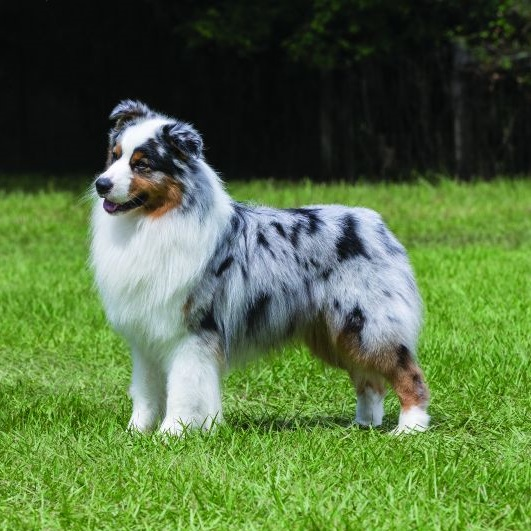
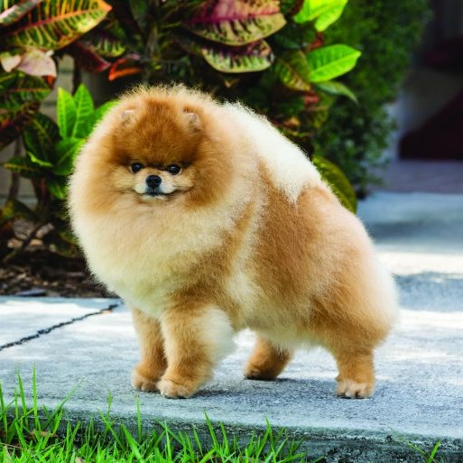
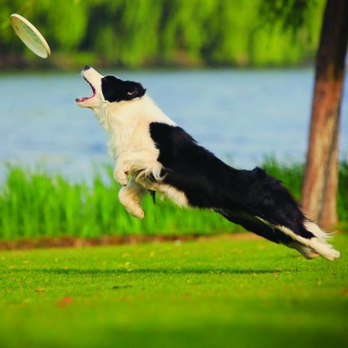
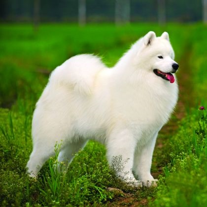
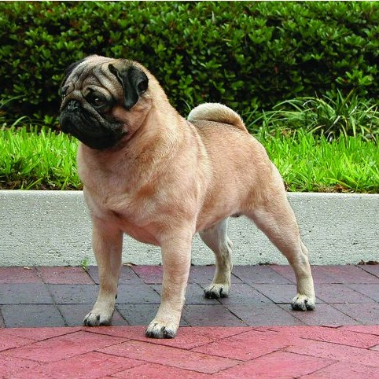
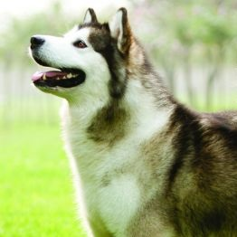
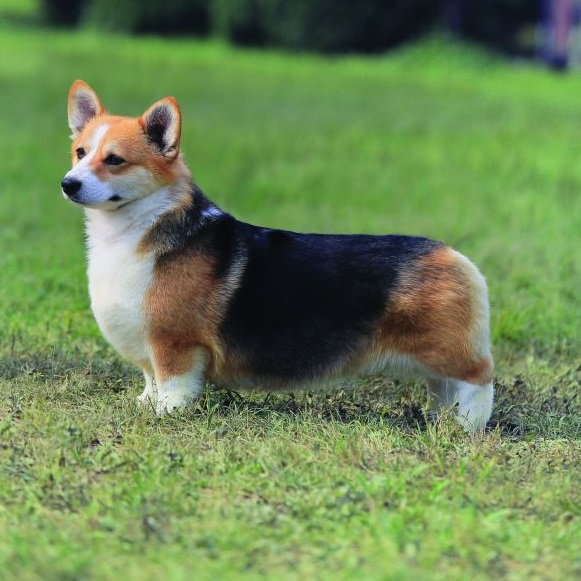
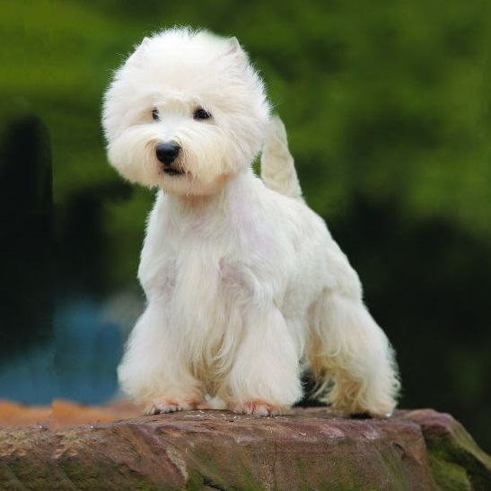
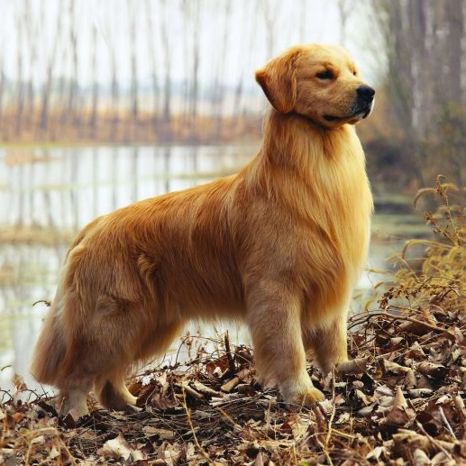
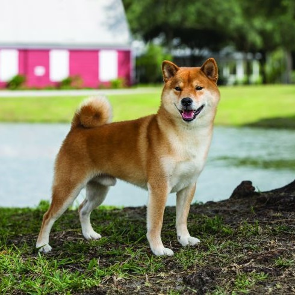

Bruno
- Male
- 2 years
- Australian Shepherd
- Likes: chasing, jumping
- Dislikes: strangers

Bella
- Female
- 8 years
- Pomeranian
- Likes: yelling
- Dislikes: the dark, being touched

Apollo
- Male
- 15 months
- Border Collie
- Likes: long walks
- Dislikes: staying still, wet food

Coconut
- Male
- 18 months
- Samoyed
- Likes: learning tricks
- Dislikes: hot weather

Teddy
- Male
- 3 years
- Pug
- Likes: other dogs
- Dislikes: cats, mice, bugs

Lola
- Female
- 9 months
- Alaskan Malamute
- Likes: cuddles, playtime, praise
- Dislikes: being alone

Ginger
- Female
- 1 year
- Welsh Corgi
- Likes: swimming, being around family
- Dislikes: going to the vet

Biscuit
- Female
- 5 months
- West Highland Terrier
- Likes: bananas, berries
- Dislikes: wearing a collar

Buddy
- Male
- 2 years
- Golden Retriever
- Likes: being praised, rolling over
- Dislikes: snow, windy weather

Poppy
- Female
- 17 months
- Shiba Inu
- Likes: taking afternoon naps
- Dislikes: being around other pets